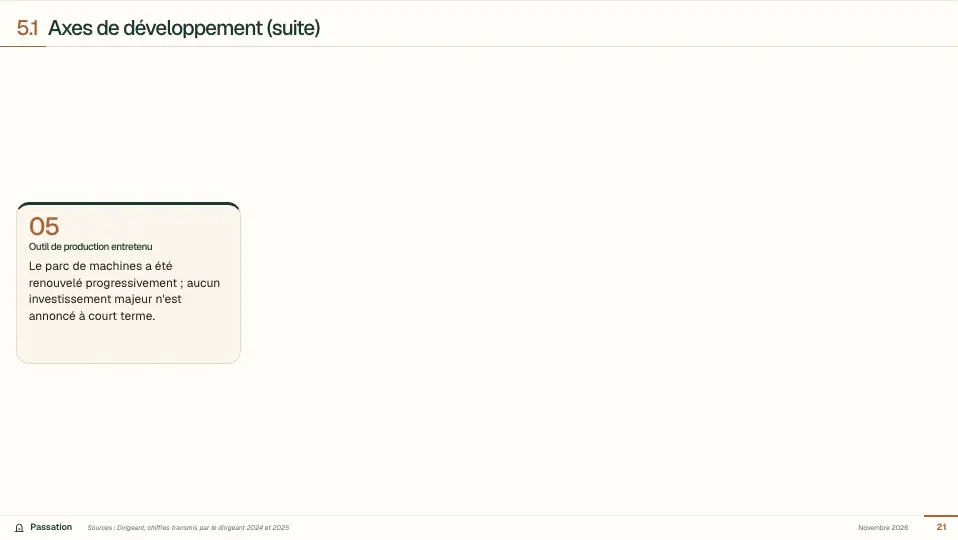
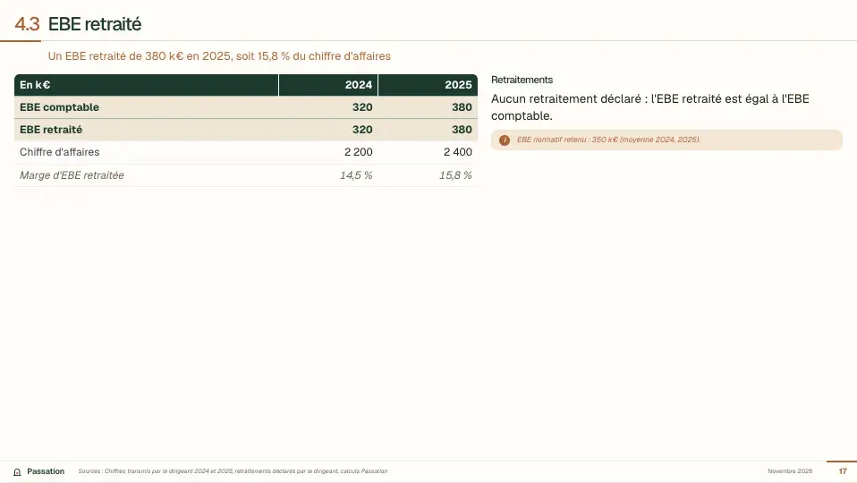

← Options à choisir · D. Plus de pages presque vides
Plus de pages presque vides
Sur le dossier fictif (24 pages), j'ai mesuré la part de chaque page réellement couverte par du texte, un tableau, un graphique ou une photo : une grille de 64 × 36 points posée sur la zone de contenu, un point compte s'il tombe sur une ligne de texte ou une image. Une page pleine couvre 45 à 55 %. Les pages d'ouverture, le sommaire, le glossaire et l'avertissement ne sont pas concernés.
Mesure sur le dossier fictif
| Page | Titre | Surface couverte | Aujourd'hui, mesure de remplirPages |
|---|---|---|---|
| 15 | Chiffres clés financiers | 53 % | 98 % |
| 9 | Activité et savoir-faire | 48 % | 85 % |
| 16 | Compte de résultat 2024-2025 | 31 % | 63 % |
| 20 | Axes de développement | 26 % | 84 % |
| 23 | Déroulement du processus | 21 % | 78 % |
| 18 | Endettement net et BFR | 18 % | 70 % |
| 17 | EBE retraité | 8 % | 25 % |
| 21 | Axes de développement (suite) | 3 % | 68 % |
La mesure actuelle (remplirPages) ne regarde que le bas du dernier élément : une page centrée verticalement paraît pleine. La phase 2 remplacerait cette mesure par la surface couverte, dans un module pur et testé.


Fusion avec la page suivante de la même partie
Une page sous le seuil est fusionnée avec sa voisine de la même partie, si le contenu des deux tient sur une page (sinon, rien ne change). Le titre de la page fusionnée reprend les deux sujets ; le sommaire et la numérotation sont recalculés.
Pages 20 et 21 fusionnées : les cinq axes sur une page
Axes de développement
- 01Savoir-faire reconnuL'atelier fabrique sur mesure portes, fenêtres et agencements.
- 02Production intégréeConception, fabrication et pose réalisées en interne.
- 03Équipe expérimentéeUn repreneur trouve une équipe formée et autonome.
- 04Carnet de commandesRégulier selon le dirigeant ; niveau à confirmer.
- 05Outil de production entretenuParc renouvelé progressivement ; pas d'investissement majeur.
Pages 16 et 17 fusionnées : « Compte de résultat et EBE retraité »
Compte de résultat et EBE retraité
| En k€ | 2024 | 2025 |
|---|---|---|
| Chiffre d'affaires | 2 200 | 2 400 |
| Achats consommés | (880) | (960) |
| Marge brute | 1 320 | 1 440 |
| Charges externes | (320) | (340) |
| Impôts et taxes | (40) | (40) |
| Charges de personnel | (640) | (680) |
| EBE comptable | 320 | 380 |
| EBE retraité | 320 | 380 |
| Marge d'EBE retraitée | 14,5 % | 15,8 % |
Les montants ci-dessus sont ceux du dossier fictif, calculés par le code (chiffres de docs/DEMO.md) ; la fusion ne change aucun chiffre, seulement la mise en page.
Sommaire recalculé : 24 → 22 pages
- 4.1 Chiffres clés financiers15
- 4.2 Compte de résultat et EBE retraité16
- 4.3 EBE retraité17
- 4.3 Endettement net et BFR17 (était 18)
- Partie 5 · Perspectives et opération18 (était 19)
- 5.1 Axes de développement19 (était 20)
- 5.1 Axes de développement (suite)21
- 5.2 Contexte et opération envisagée20 (était 22)
- 5.3 Déroulement du processus21 (était 23)
- Avertissement22 (était 24)
Sections sans donnée : deux variantes
Variante 2 : page de fin de partie (exemple, partie 3, demandes fictives)
Éléments à compléter
- MarchéDonnées chiffrées sur le marché régional de la menuiserie (taille, évolution), avec leur source
- MarchéPrincipaux concurrents locaux et positionnement de l'entreprise
- ClientsPart du chiffre d'affaires réalisée avec les cinq premiers clients
- ClientsRépartition entre particuliers et professionnels du bâtiment